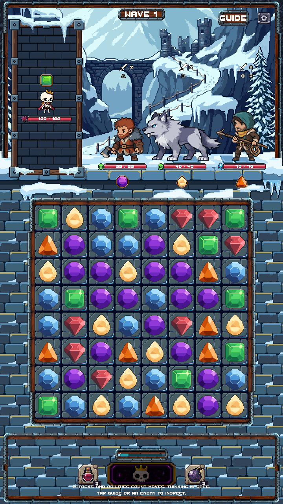
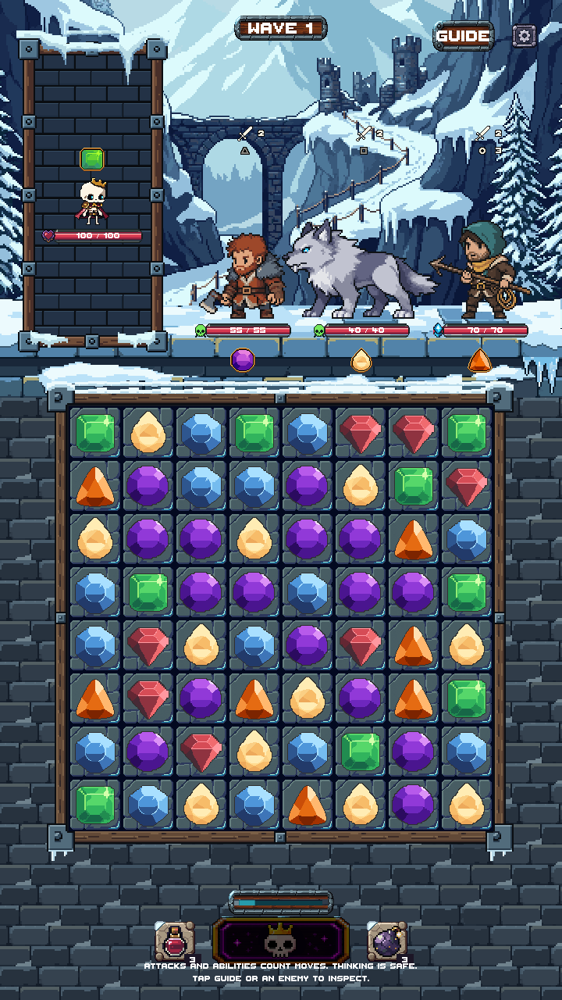

Actual Unity Game captures with three live enemies. Lower masonry is darker and muted; the two outer HUD enclosures are removed. Approved scenery, snow ledge, portrait, gameplay board, gems and controls are preserved. Review only — not merged or registered as the production zone art.
Before

Revised

Native art scale: 1× / 2× / 3× depending on viewport. The existing low-resolution board sampling and 360×640 HUD crowding are retained; this stage does not change gameplay layout. No phone/device testing is claimed.
Native exported assets — 1× and 4×
13 editable LibreSprite modules. Snowy timber rails, four iron corners, one centered connector, separate snow caps/icicles, and a recolored copy of the cobble tile. Snow remains outside the playable opening.